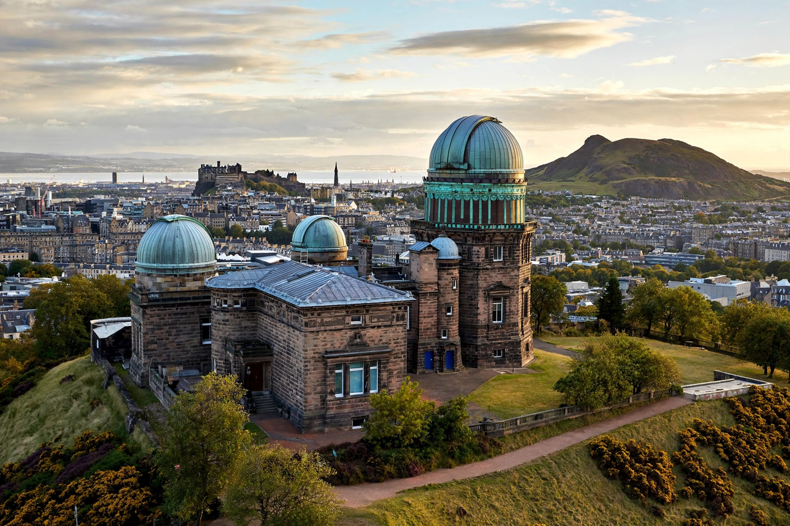

Ralph Allen Samuel
Ralph Allen Samuel is recorded in reference sources as an Astronomer Royal for Scotland, serving in the post during the mid-20th century. The office of Astronomer Royal for Scotland, created in 1834, was originally attached to the post of Regius Professor of Astronomy at the University of Edinburgh and to the directorship of the Royal Observatory, Edinburgh.

| Ralph Allen Samuel | |
|---|---|
| Title | Astronomer Royal for Scotland |
| Institution | Royal Observatory, Edinburgh |
| Field | Astronomy |
The office
Holders of the post included Thomas Henderson, the first holder, and Charles Piazzi Smyth, who served for over four decades in the 19th century. In the 20th century the position was held by a succession of directors of the Royal Observatory on Blackford Hill, among them Ralph Sampson and, in more recent decades, astrophysicist Malcolm Longair and later John C. Brown. Since 1995 the title has been honorary, awarded to distinguished astronomers connected with Scotland.
Details of Samuel's biography and tenure are sparsely documented in widely available reference works; he appears principally in listings of holders of the Astronomer Royal for Scotland title.